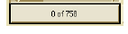
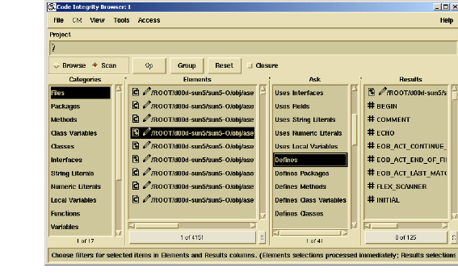

Scan Mode
Scan mode provides a quick way of examining the content of your current project from your Browse mode selection. In scan mode, the Browser displays four columns, or lists. Each pane is labeled with a count bar, 0 of n, to indicate the number of selected items in relation to the total number available.

When active, this bar becomes a tool you can filter the list displayed in the pane by. For more information on the filter tool, see Filtering Lists.
